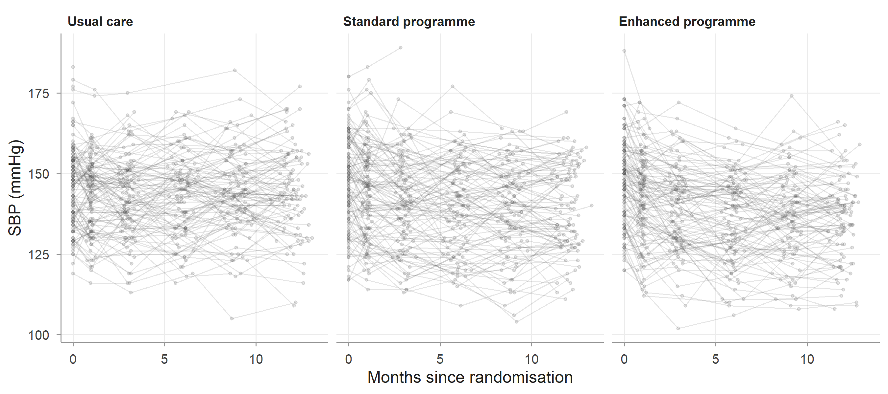
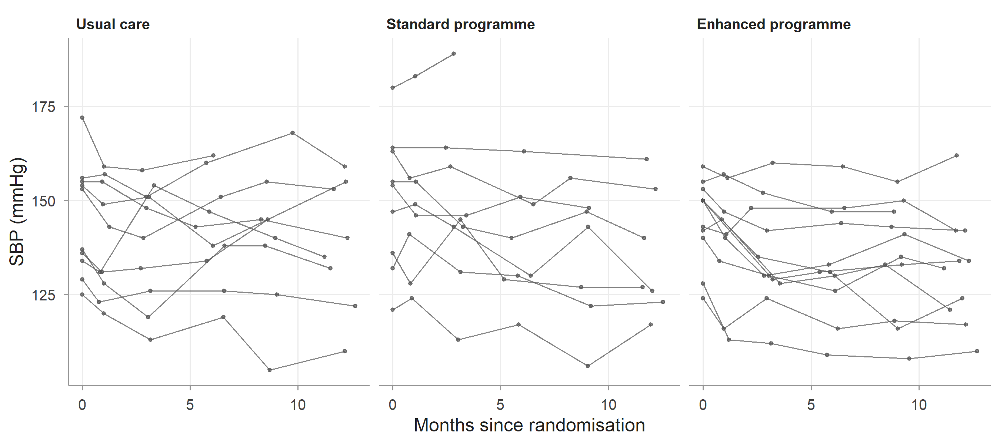
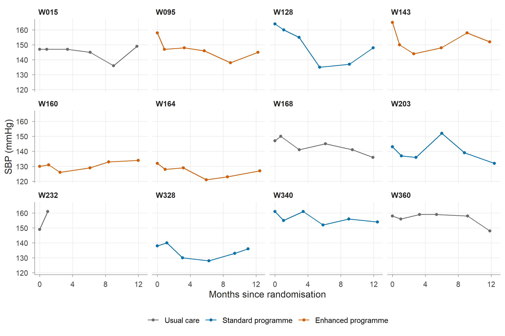
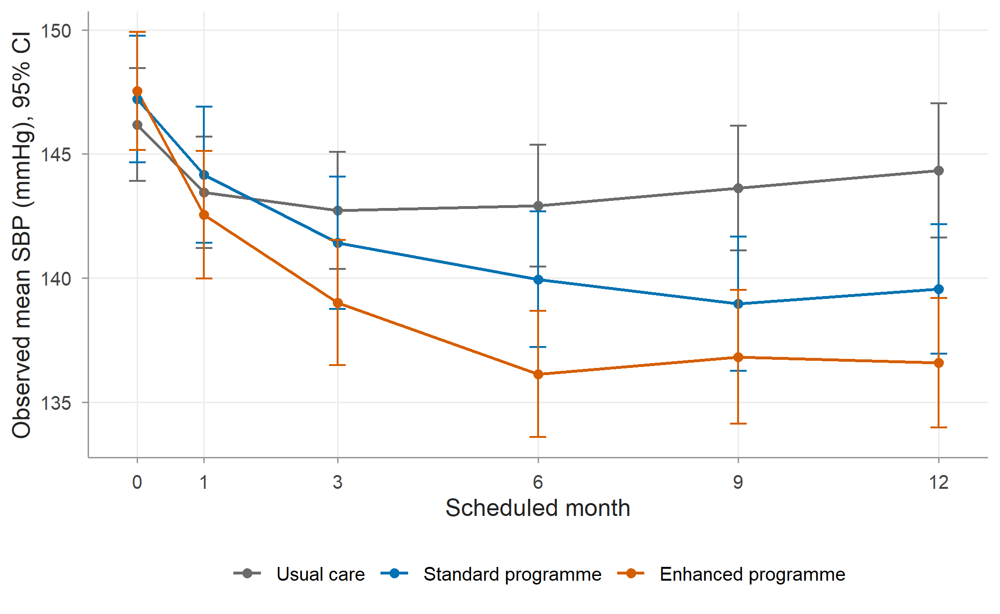
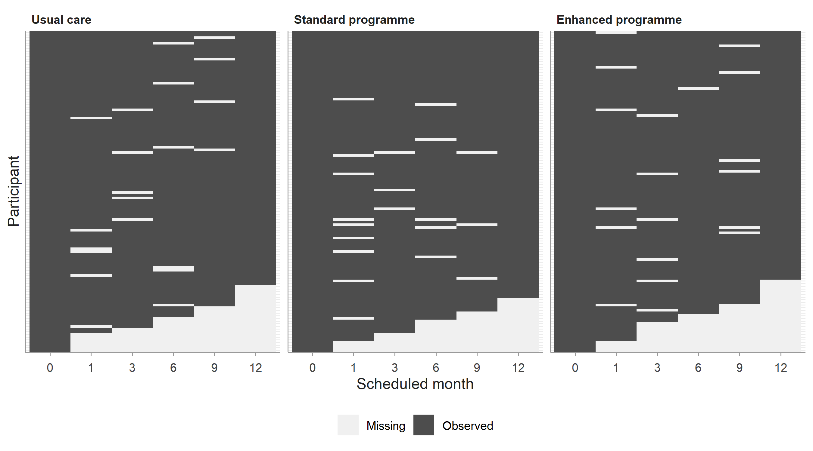
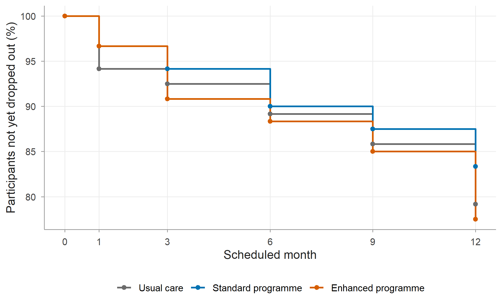
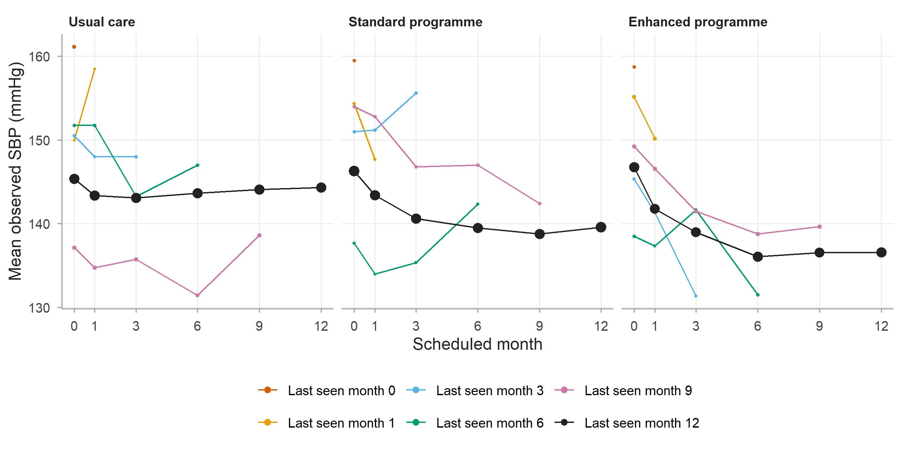
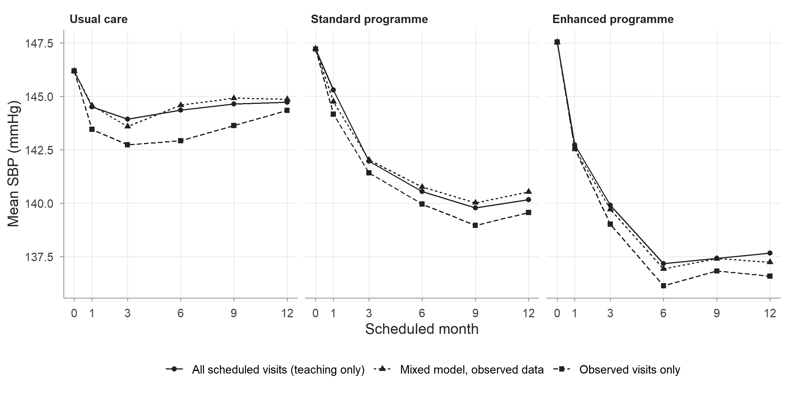

source(here::here("R", "setup.R"))
walk <- load_walk()2 Preparing and exploring longitudinal data in R
Most of the time spent on a longitudinal analysis goes into getting the data into a shape that a model can use, and into looking at them carefully before any model is fitted. Errors made here are hard to detect later. A duplicated visit makes a participant look more precisely measured than they are, a wrongly parsed date puts a measurement at the wrong time, and a missing visit that silently disappears from a table hides the dropout that will drive the main analytical problem of the study. This module takes the WALK trial from a messy visit-level export to a checked analysis file, then describes and plots the data in the ways that matter for longitudinal questions. It ends with a warning that runs through the rest of the course: when people with higher blood pressure leave the study, the average of the people who remain is not the average of everyone randomised.
Learning outcomes
By the end of this module participants will be able to:
- 2.1 Reshape longitudinal data between long and wide formats with
tidyr, keeping identifiers and time variables intact. - 2.2 Join visit-level and participant-level files and validate the result: unique subject–visit keys, consistent identifiers and plausible values.
- 2.3 Detect and resolve exact and conflicting duplicate records, missing visits and discrepancies between scheduled and actual measurement times, and document each decision.
- 2.4 Produce baseline summaries by group, visit-specific summaries and a participant-flow table.
- 2.5 Construct and interpret spaghetti plots, individual trajectory panels, group mean plots and missingness plots.
- 2.6 Explain why observed group means at each visit are not the same as model-estimated mean trajectories when dropout depends on the outcome.
Prerequisites
Module 1 (the vocabulary of participants, observations, visits and measurement occasions, and the WALK design). Module 0 covers the dplyr and ggplot2 basics used here.
WarningSimulated data
All examples use simulated data from fictional studies. Results illustrate methods; they are not empirical findings.
The WALK files used in this module are:
| File | One row per | Used for |
|---|---|---|
walk_wide.csv |
participant | reshaping |
walk_long.csv |
attended visit | the checked analysis file |
walk_baseline.csv |
participant | joins, randomisation dates, dropout information |
walk_visits_raw.csv |
record in a messy export | the cleaning workflow |
walk_complete.csv |
scheduled visit, before missingness | teaching only: shows what the missing values were |
baseline <- load_walk("baseline")
wide <- load_walk("wide")
sched_months <- c(0, 1, 3, 6, 9, 12)2.1 Long and wide formats
2.1.1 The research question and estimand
Reshaping does not answer a scientific question by itself, but every question in the course needs data in a particular shape. Mixed models, generalized estimating equations and most plots need long format: one row per observation, with an identifier, a time variable and the outcome. Some summaries, correlation matrices between visits and certain imputation methods need wide format: one row per participant and one column per scheduled visit. The task is to move between the two without losing or inventing information.
2.1.2 Data structure and outcome types
walk_wide.csv has 360 rows and the columns sbp_m0 to sbp_m12, one per scheduled month. The analysis file walk_long.csv has 1897 rows, one per attended visit, with visit, the scheduled month month_sched and the actual month month.
head(wide, 4)#> # A tibble: 4 × 12
#> id clinic arm age sex bmi sbp_m0 sbp_m1 sbp_m3 sbp_m6 sbp_m9
#> <chr> <fct> <fct> <dbl> <fct> <dbl> <dbl> <dbl> <dbl> <dbl> <dbl>
#> 1 W001 8 EP 69 Male 32.8 150 148 133 140 132
#> 2 W002 5 SP 64 Male 37.9 176 165 NA NA NA
#> 3 W003 4 UC 52 Female 26.3 125 120 113 119 105
#> 4 W004 5 EP 69 Female 28.8 145 140 145 119 130
#> # ℹ 1 more variable: sbp_m12 <dbl>The identifier (id) defines the subject. The scheduled time (month_sched) defines the visit. The actual time (month) is when the measurement was really taken. A wide file can carry only one of these as column names, and it is always the scheduled one.
2.1.3 Intuition
A wide file is a table of participants by visits. A long file stacks the columns of that table on top of each other and records, in a new column, which visit each value came from. Reshaping wide to long therefore needs three pieces of information: which columns hold the repeated measurements, how to turn each column name into a time value, and what to call the column of values. Reshaping long to wide needs the reverse: which column supplies the new column names and which supplies the values. Anything that varies within a participant but is not named in the reshape (for example actual time or steps) cannot fit in a single wide row and has to be dropped or reshaped into its own set of columns.
2.1.4 The model
There is no statistical model here, but it helps to state the correspondence exactly. For participant \(i\) the wide row holds the vector
\[ \mathbf{y}_i = (y_{i1}, y_{i2}, \dots, y_{i6})^\top , \]
where \(y_{ij}\) is SBP at scheduled visit \(j\) and some elements may be missing. The long file holds one row for each pair \((i, j)\) with columns \((i,\; s_j,\; y_{ij})\), where \(s_j \in \{0, 1, 3, 6, 9, 12\}\) is the scheduled month of visit \(j\). The pair \((i, s_j)\) is the key: it must identify exactly one row. Moving from wide to long creates \(N \times 6\) rows, of which the missing \(y_{ij}\) may be kept as explicit NA rows or dropped. The actual time \(t_{ij}\) is extra information that the wide format has no place for.
2.1.5 Assumptions and limitations
Reshaping assumes that the key is unique (no participant has two values for the same visit) and that column names encode the time consistently. Wide format assumes a common schedule. It cannot represent actual measurement times that differ between participants, or unscheduled extra visits, without adding further columns. It also hides missing visits less obviously than one might expect: an NA cell is visible, but a long file that simply lacks a row gives no sign of the absent visit.
2.1.6 Fitting the model in R
tidyr::pivot_longer() goes from wide to long. names_prefix strips the text sbp_m from the column names and names_transform turns what remains into a number.
long_from_wide <- wide |>
pivot_longer(cols = starts_with("sbp_m"),
names_to = "month_sched", names_prefix = "sbp_m",
names_transform = list(month_sched = as.numeric),
values_to = "sbp")
long_from_wide#> # A tibble: 2,160 × 8
#> id clinic arm age sex bmi month_sched sbp
#> <chr> <fct> <fct> <dbl> <fct> <dbl> <dbl> <dbl>
#> 1 W001 8 EP 69 Male 32.8 0 150
#> 2 W001 8 EP 69 Male 32.8 1 148
#> 3 W001 8 EP 69 Male 32.8 3 133
#> 4 W001 8 EP 69 Male 32.8 6 140
#> 5 W001 8 EP 69 Male 32.8 9 132
#> 6 W001 8 EP 69 Male 32.8 12 132
#> 7 W002 5 SP 64 Male 37.9 0 176
#> 8 W002 5 SP 64 Male 37.9 1 165
#> 9 W002 5 SP 64 Male 37.9 3 NA
#> 10 W002 5 SP 64 Male 37.9 6 NA
#> # ℹ 2,150 more rowstidyr::pivot_wider() goes back. Only variables that are constant within a participant (clinic, arm, age, sex, bmi) may stay as identifying columns. If month or steps were left in, every visit would have a different value and pivot_wider() would produce one row per visit instead of one per participant.
wide_again <- walk |>
select(id, clinic, arm, age, sex, bmi, month_sched, sbp) |>
pivot_wider(names_from = month_sched, values_from = sbp,
names_prefix = "sbp_m")
dim(wide_again)#> [1] 360 122.1.7 Interpreting the output
n_long_rows <- nrow(long_from_wide)
n_long_na <- sum(is.na(long_from_wide$sbp))
reshape_check <- long_from_wide |>
filter(!is.na(sbp)) |>
full_join(walk |> select(id, month_sched, sbp_long = sbp),
by = c("id", "month_sched"))
n_mismatch <- sum(is.na(reshape_check$sbp) | is.na(reshape_check$sbp_long) |
reshape_check$sbp != reshape_check$sbp_long)The long version of the wide file has 2160 rows (\(360 \times 6\)), of which 263 hold NA because the visit was not attended. Dropping those leaves 1897 rows, the same number as walk_long.csv. Matching the two by id and month_sched finds 0 disagreements in SBP. The round trip back to wide gives 360 rows and 12 columns, the same shape as the original wide file.
| Output | What it means | Value here |
|---|---|---|
Rows after pivot_longer() |
participants × scheduled visits | 2160 |
NA values |
scheduled visits not attended | 263 |
Rows after dropping NA |
attended visits | 1897 |
SBP disagreements with walk_long |
errors introduced by reshaping | 0 |
2.1.8 Checking the model
Check every reshape in both directions. Count rows before and after, check that the number of distinct identifiers has not changed, and compare values with an independent source where one exists. all.equal() compares two data frames value by value:
all.equal(as.data.frame(wide_again), as.data.frame(wide),
check.attributes = FALSE)#> [1] TRUEIf pivot_wider() warns that “values are not uniquely identified” and produces list-columns, the key is not unique. That is a duplicate problem to solve before reshaping (see the cleaning section below), not something to fix with values_fn = mean.
2.1.9 Reporting
Reshaping is rarely mentioned in a paper, but the analysis log should record it: “The wide file (360 participants) was converted to long format (2160 participant-visits, 1897 with an observed SBP). Converting back reproduced the original file exactly.”
ImportantCommon mistakes
- Leaving time-varying columns in
pivot_wider(). The result has one row per visit, full ofNA. Select only the key, the time and the value (plus constant covariates) first. - Keeping the time as text.
"m12"sorts before"m3". Usenames_prefixandnames_transformso that time is numeric. - Treating scheduled time as actual time. The wide file cannot hold actual times. Join them back from the long file when the analysis uses actual time.
- Dropping
NArows without counting them. Record how many visits were missing before you discard the rows.
2.2 Joining participant-level and visit-level files
2.2.1 The research question and estimand
Analyses need participant-level information (arm, baseline covariates, randomisation date, dropout status) on every visit row. A join copies it from the participant-level file onto the visit-level file. The aim is a long file in which every row has the right participant’s covariates, and no rows have been created or lost.
2.2.2 Data structure and outcome types
walk_baseline.csv has one row per participant (360 rows, key id). The visit file has one row per participant and visit. This is a many-to-one relationship: many visit rows match one baseline row.
2.2.3 Intuition
A join looks up each visit row’s id in the baseline file and appends the matching columns. Three things can go wrong. An id in the visit file may have no match (a typing error, a lower-case ID, a participant missing from the baseline file), and a left join will then fill the new columns with NA without complaint. An id may appear twice in the baseline file, and every visit for that participant is then duplicated. Or both files may contain the same variable (arm, age), and the join creates arm.x and arm.y that may silently disagree.
2.2.4 The model
Write the participant-level covariates as \(\mathbf{x}_i\) and the visit-level data as \((y_{ij}, t_{ij})\). A correct join produces rows \((i, j, y_{ij}, t_{ij}, \mathbf{x}_i)\): the participant-level values are repeated, unchanged, on each of the \(n_i\) rows of participant \(i\). Formally the baseline file must define a function \(i \mapsto \mathbf{x}_i\), which means that each \(i\) appears at most once. The number of rows after a left join equals the number before it only if that holds.
2.2.5 Assumptions and limitations
The join assumes that the key is spelled the same way in both files (same case, no stray spaces, same type) and is unique in the participant-level file. It does not check that the values make sense. A baseline file with the wrong arm for one participant will be joined without complaint.
2.2.6 Fitting the model in R
dplyr::left_join() keeps every row of the left (visit) file. The relationship argument states what you expect. With "many-to-one", dplyr stops with an error if any id occurs more than once in the right-hand file. Select only the variables you need from the baseline file, so that no name is duplicated.
walk_joined <- walk |>
left_join(baseline |> select(id, rand_date, sbp0, dropout, last_month_sched),
by = "id", relationship = "many-to-one")
c(before = nrow(walk), after = nrow(walk_joined))#> before after
#> 1897 1897anti_join() lists keys that do not match, in each direction:
nrow(anti_join(walk, baseline, by = "id")) # visit rows without a baseline row#> [1] 0nrow(anti_join(baseline, walk, by = "id")) # randomised but never seen#> [1] 0To see the relationship check at work, duplicate one baseline row deliberately:
baseline_bad <- bind_rows(baseline, baseline |> filter(id == "W001"))
res <- tryCatch(
left_join(walk, baseline_bad |> select(id, rand_date),
by = "id", relationship = "many-to-one"),
error = function(e) conditionMessage(e))
cat(res)#> Each row in `x` must match at most 1 row in `y`.
#> ℹ Row 1 of `x` matches multiple rows in `y`.2.2.7 Interpreting the output
The join kept 1897 rows, exactly the number in walk_long. Both anti-joins return zero rows: every visit belongs to a randomised participant, and every randomised participant has at least the baseline visit. The deliberately corrupted baseline file produced an error naming the offending row. Without relationship, dplyr would only have warned, and W001’s visits would have appeared twice.
2.2.8 Checking the model
After every join, check:
- the row count is unchanged (for a many-to-one left join);
- no new
NAvalues appeared in the joined columns (sum(is.na(walk_joined$rand_date))is 0); - no
.x/.ycolumns were created; - the participant-level values are constant within participant, for example
walk_joined |> group_by(id) |> summarise(k = n_distinct(sbp0))has allkequal to 1.
walk_joined |> group_by(id) |> summarise(k = n_distinct(sbp0)) |> count(k)#> # A tibble: 1 × 2
#> k n
#> <int> <int>
#> 1 1 3602.2.9 Reporting
“Participant-level data (360 participants) were joined to the visit file by participant identifier. All visit records matched a randomised participant and no participant identifier was duplicated.”
ImportantCommon mistakes
- Joining on a key with inconsistent case or spaces.
"w004"does not match"W004". Standardise keys before joining. - Not stating the relationship. Use
relationship = "many-to-one"so that a duplicated participant row stops the code. - Joining variables that already exist.
arm.xandarm.yappear. Select the new columns only, or join by all shared columns deliberately. - Using
inner_join()without counting. An inner join silently drops unmatched rows. Use a left join and inspect the unmatched keys withanti_join().
2.3 Cleaning a raw visit export
Real exports rarely look like walk_long.csv. The file walk_visits_raw.csv is a deliberately untidy version of the same visits, with the problems that a trial database or a clinic spreadsheet typically produces. This section works through it step by step and records every decision.
2.3.1 The research question and estimand
The target is an analysis file in which each row is one attended visit of one randomised participant, with a unique key \((i, j)\), a correctly parsed date, the actual time since randomisation, numeric outcome and covariate values, and flags for every value that was changed or questioned. The cleaning must not change the estimand. Rules that depend on outcomes or on arm can do exactly that, so they are fixed before anyone looks at results by arm.
2.3.2 Data structure and outcome types
raw <- read_csv(here("data", "walk_visits_raw.csv"),
col_types = cols(.default = col_character()))
raw#> # A tibble: 1,906 × 5
#> participant visit_label visit_date sbp_mmhg steps_k
#> <chr> <chr> <chr> <chr> <chr>
#> 1 W233 M0 2024-01-31 156 5
#> 2 W146 M3 2024-06-16 151 4.5
#> 3 W353 M6 2024-12-26 140 7.5
#> 4 W102 M3 2024-07-09 144 5.6
#> 5 W255 M0 2024-03-26 131 8.5
#> 6 W060 M12 2025-06-17 119 6.4
#> 7 W030 M3 2024-11-13 142 7.3
#> 8 W175 M12 2025-08-30 129 10.5
#> 9 W295 M3 2024-12-24 135 11.7
#> 10 W147 M9 2024-11-22 149 9.6
#> # ℹ 1,896 more rowsEvery column is read as text. That is deliberate: if read_csv() guessed the types, a single stray character in sbp_mmhg would turn the whole column into text, or a parsing problem would turn a value into NA with only a warning. Reading as text and converting explicitly lets you see and count each problem. The file has 1906 rows. walk_long.csv has 1897, so there are 9 more rows than attended visits.
2.3.3 Intuition
Cleaning is a sequence of small, checkable transformations, each followed by a test. The order matters. Identifiers must be standardised before looking for duplicates, because w004 and W004 are the same participant. Exact duplicates must be removed before conflicting duplicates are counted, otherwise a pair of identical rows looks like a conflict. Dates must be parsed before actual time can be derived. Every change is recorded in a log so that another analyst could repeat it.
2.3.4 The model
Let \(D_{ij}\) be the visit date of participant \(i\) at scheduled visit \(j\), \(D^{\text{rand}}_i\) the randomisation date and \(s_j\) the scheduled month. WALK defines a month as 30.44 days (\(365.25/12\) rounded to two decimals). The actual time is
\[ t_{ij} = \frac{D_{ij} - D^{\text{rand}}_i}{30.44}, \]
in months. The visit was due on the target date \(D^{\text{rand}}_i + \operatorname{round}(30.44\, s_j)\), and the deviation in days is
\[ d_{ij} = D_{ij} - \bigl(D^{\text{rand}}_i + \operatorname{round}(30.44\, s_j)\bigr). \]
A visit is out of window if \(|d_{ij}| > w_j\), where \(w_j\) is the half-width of the protocol window for visit \(j\). A value \(y_{ij}\) is implausible if it lies outside a range fixed in advance, here \([70, 250]\) mmHg for SBP. These quantities are what the code below computes.
2.3.5 Assumptions and limitations
Each rule rests on an assumption that should be written down. Converting IDs to upper case assumes that w004 and W004 are the same person, which is safe only because the protocol format is W followed by three digits. Treating rows identical in every column as copies assumes that two genuine measurements cannot agree exactly on date, SBP and steps. The rule for conflicting duplicates is a convention. Without the source documents nobody knows which record is right. Plausibility limits catch gross errors only. A value of 160 entered instead of 150 is plausible and will never be detected by a range check.
2.3.6 Fitting the model in R
Step 1. Standardise identifiers and visit labels. toupper(trimws()) removes case and spacing differences. The visit label M12 becomes the scheduled month 12 and visit number 6. The stopifnot() lines stop the code if any ID does not match the protocol format or any label is unknown.
raw |> filter(participant != toupper(participant)) |> distinct(participant)#> # A tibble: 4 × 1
#> participant
#> <chr>
#> 1 w256
#> 2 w004
#> 3 w051
#> 4 w123step1 <- raw |>
mutate(id = toupper(trimws(participant)),
month_sched = as.numeric(sub("^M", "", visit_label)),
visit = match(month_sched, sched_months))
stopifnot(all(grepl("^W[0-9]{3}$", step1$id)), !anyNA(step1$visit))Step 2. Parse dates and convert text to numbers. as.Date() with an explicit format returns NA for anything that does not match. readr::parse_double() converts text to numbers and reports problems.
step2 <- step1 |>
mutate(visit_date = as.Date(visit_date, format = "%Y-%m-%d"),
sbp = parse_double(sbp_mmhg),
steps = parse_double(steps_k)) |>
select(id, visit, month_sched, visit_date, sbp, steps)
c(bad_dates = sum(is.na(step2$visit_date)), missing_sbp = sum(is.na(step2$sbp)),
missing_steps = sum(is.na(step2$steps)))#> bad_dates missing_sbp missing_steps
#> 0 1 0step2 |> filter(is.na(sbp))#> # A tibble: 1 × 6
#> id visit month_sched visit_date sbp steps
#> <chr> <int> <dbl> <date> <dbl> <dbl>
#> 1 W345 1 0 2024-08-26 NA 9.9One SBP value is missing. In the raw file the cell is empty, and read_csv() turns empty strings into NA by default. This is a missing value at an attended visit: the participant came, steps were recorded, but SBP was not entered. It is different from a missed visit and should be queried with the clinic.
Step 3. Remove exact duplicates. Rows that agree in every column are copies of one record.
n_exact_dup <- sum(duplicated(step2))
step2[duplicated(step2) | duplicated(step2, fromLast = TRUE), ] |>
arrange(id, visit)#> # A tibble: 12 × 6
#> id visit month_sched visit_date sbp steps
#> <chr> <int> <dbl> <date> <dbl> <dbl>
#> 1 W062 6 12 2025-01-26 160 9.2
#> 2 W062 6 12 2025-01-26 160 9.2
#> 3 W064 2 1 2024-03-20 125 6.7
#> 4 W064 2 1 2024-03-20 125 6.7
#> 5 W135 3 3 2024-09-21 144 5.6
#> 6 W135 3 3 2024-09-21 144 5.6
#> 7 W266 6 12 2025-10-11 113 4.9
#> 8 W266 6 12 2025-10-11 113 4.9
#> 9 W272 3 3 2025-02-11 149 6.7
#> 10 W272 3 3 2025-02-11 149 6.7
#> 11 W329 2 1 2024-07-03 142 10.7
#> 12 W329 2 1 2024-07-03 142 10.7step3 <- distinct(step2)There are 6 exact duplicate rows. Removing them leaves 1900 rows.
Step 4. Find and resolve conflicting duplicates. After removing exact copies, any remaining repeat of the key \((i, j)\) is a conflict: two different records for the same visit.
conflicts <- step3 |>
add_count(id, visit, name = "n_records") |>
filter(n_records > 1) |>
arrange(id, visit, visit_date)
conflicts#> # A tibble: 6 × 7
#> id visit month_sched visit_date sbp steps n_records
#> <chr> <int> <dbl> <date> <dbl> <dbl> <int>
#> 1 W216 2 1 2024-07-20 143 7.7 2
#> 2 W216 2 1 2024-07-22 137 7.7 2
#> 3 W255 5 9 2024-12-12 129 7.7 2
#> 4 W255 5 9 2024-12-14 139 7.7 2
#> 5 W290 2 1 2024-11-21 136 5.9 2
#> 6 W290 2 1 2024-11-23 140 5.9 2There are 3 visits with two records each. Within each pair the dates differ by 2 days and SBP differs by between 4 and 10 mmHg. Some rule is needed to keep one record per visit. The best option is to query the clinic and use the source document. When that is impossible, common conventions are to keep the earliest record (the first measurement taken in the visit window), to keep the record closest to the target date, or to average the two values. WALK’s data management plan specifies the first: keep the earliest-dated record and flag the visit.
The rule must be set without looking at outcomes by arm. Suppose an analyst looked at the three pairs, saw which version made the enhanced programme look better, and chose a rule accordingly. With three pairs the effect would be tiny, but the principle scales: a rule chosen after seeing its consequences is part of the analysis, and it can bias the estimated treatment effect in a direction the analyst prefers. The same applies to outlier removal and window definitions. This is why trial guidelines expect data-handling rules to be written into the statistical analysis plan before unblinding (Gamble et al. 2017).
step4 <- step3 |>
group_by(id, visit) |>
mutate(conflict_flag = n() > 1) |>
arrange(visit_date, .by_group = TRUE) |>
slice(1) |>
ungroup()
stopifnot(nrow(count(step4, id, visit) |> filter(n > 1)) == 0)
nrow(step4)#> [1] 1897Step 5. Derive actual time. Join the randomisation date and apply the formulas above. unmatched = "error" stops the code if any visit has no baseline row.
days_per_month <- 30.44
step5 <- step4 |>
left_join(baseline |> select(id, rand_date),
by = "id", relationship = "many-to-one", unmatched = "error") |>
mutate(days = as.numeric(visit_date - rand_date),
month = round(days / days_per_month, 2),
target_date = rand_date + round(month_sched * days_per_month),
dev_days = as.numeric(visit_date - target_date))
stopifnot(all(step5$days >= 0), all(step5$month[step5$visit == 1] == 0))The checks confirm that no visit is dated before randomisation and that every baseline visit took place on the randomisation date.
Step 6. Check plausibility. The range 70–250 mmHg was fixed in advance as plausible for adults with raised blood pressure.
step5 |> filter(sbp < 70 | sbp > 250)#> # A tibble: 1 × 12
#> id visit month_sched visit_date sbp steps conflict_flag rand_date
#> <chr> <int> <dbl> <date> <dbl> <dbl> <lgl> <date>
#> 1 W088 6 12 2025-02-20 1190 4.2 FALSE 2024-02-09
#> # ℹ 4 more variables: days <dbl>, month <dbl>, target_date <date>,
#> # dev_days <dbl>One value, 1190 mmHg for W088 at month 12, is impossible. It looks like 119 with an extra zero (a typing error multiplying the value by 10). It is tempting to correct it, and some data management plans allow obvious transcription errors to be corrected. WALK’s plan does not, so the value is set to missing, the raw value is kept in a separate column, and a query is logged. If the clinic confirms 119, the correction is made in the database and the cleaning code is rerun.
step6 <- step5 |>
mutate(sbp_flag = case_when(is.na(sbp) ~ "blank",
sbp < 70 | sbp > 250 ~ "implausible",
TRUE ~ "ok"),
sbp_raw = sbp,
sbp = if_else(sbp_flag == "implausible", NA_real_, sbp))
count(step6, sbp_flag)#> # A tibble: 3 × 2
#> sbp_flag n
#> <chr> <int>
#> 1 blank 1
#> 2 implausible 1
#> 3 ok 1895Step 7. Compare scheduled and actual times. The (hypothetical) WALK protocol allows ±7 days around month 1, ±14 days around month 3 and ±28 days around months 6, 9 and 12.
window_days <- c(`0` = 0, `1` = 7, `3` = 14, `6` = 28, `9` = 28, `12` = 28)
walk_clean <- step6 |>
mutate(window = window_days[as.character(month_sched)],
out_of_window = abs(dev_days) > window) |>
select(id, visit, month_sched, visit_date, rand_date, month, dev_days,
out_of_window, sbp, sbp_raw, sbp_flag, steps, conflict_flag) |>
arrange(id, visit)
window_table <- walk_clean |>
filter(visit > 1) |>
group_by(month_sched) |>
summarise(window = first(window_days[as.character(month_sched)]),
n = n(), min_dev = min(dev_days), max_dev = max(dev_days),
sd_dev = round(sd(dev_days), 1), n_out = sum(out_of_window))
window_table#> # A tibble: 5 × 7
#> month_sched window n min_dev max_dev sd_dev n_out
#> <dbl> <dbl> <int> <dbl> <dbl> <dbl> <int>
#> 1 1 7 324 -9 12 3.7 10
#> 2 3 14 319 -23 21 7.7 15
#> 3 6 28 309 -26 26 10.2 0
#> 4 9 28 297 -37 31 12.4 3
#> 5 12 28 288 -36 40 13.6 62.3.7 Interpreting the output
The window table shows that timing becomes more variable as follow-up goes on. The standard deviation of the deviation from the target date grows from 3.7 days at month 1 to 13.6 days at month 12, and the most extreme visit is 40 days from its target. In total 34 visits (2.2% of follow-up visits) fall outside the window. The decision is to keep them and flag them. Excluding them would throw away valid measurements and create extra missing data. Because the course models use actual time (month) for the random slope, a visit at 13.2 months is placed at 13.2 months, not at 12. Analyses that use the scheduled visit as a factor treat it as a month-12 measurement. A sensitivity analysis that excludes out-of-window visits can show whether that matters.
cleaning_log <- tibble(
step = c("Rows read", "Exact duplicate rows removed",
"Rows after removing exact duplicates",
"Visits with conflicting records", "Rows after resolving conflicts",
"Blank SBP values", "Implausible SBP values set to missing",
"Out-of-window visits (kept, flagged)"),
n = c(nrow(raw), n_exact_dup, nrow(step3),
n_distinct(paste(conflicts$id, conflicts$visit)), nrow(walk_clean),
sum(walk_clean$sbp_flag == "blank"),
sum(walk_clean$sbp_flag == "implausible"),
sum(walk_clean$out_of_window)))
knitr::kable(cleaning_log, caption = "Cleaning log for walk_visits_raw.csv")| step | n |
|---|---|
| Rows read | 1906 |
| Exact duplicate rows removed | 6 |
| Rows after removing exact duplicates | 1900 |
| Visits with conflicting records | 3 |
| Rows after resolving conflicts | 1897 |
| Blank SBP values | 1 |
| Implausible SBP values set to missing | 1 |
| Out-of-window visits (kept, flagged) | 34 |
The cleaning log is the main output of this section. Together with a query log (one line per questioned value, with the action taken), it lets anyone reproduce the analysis file and see every decision.
2.3.8 Checking the model
Because WALK is simulated, the checked analysis file walk_long.csv exists and the cleaned data can be compared with it. In a real study the equivalent check is double data entry, source-document verification of a sample, or comparison with a previous data freeze.
agreement <- walk_clean |>
full_join(walk |> select(id, visit, month_ref = month, sbp_ref = sbp,
steps_ref = steps), by = c("id", "visit"))
sbp_differs <- agreement |>
filter(is.na(sbp) | is.na(sbp_ref) | sbp != sbp_ref)
month_diff <- agreement$month - agreement$month_ref
c(only_clean = sum(is.na(agreement$month_ref)),
only_walk_long = sum(is.na(agreement$month)),
sbp_differs = nrow(sbp_differs),
steps_differs = sum(agreement$steps != agreement$steps_ref))#> only_clean only_walk_long sbp_differs steps_differs
#> 0 0 2 0sbp_differs |> select(id, visit, sbp, sbp_raw, sbp_ref, sbp_flag)#> # A tibble: 2 × 6
#> id visit sbp sbp_raw sbp_ref sbp_flag
#> <chr> <dbl> <dbl> <dbl> <dbl> <chr>
#> 1 W088 6 NA 1190 119 implausible
#> 2 W345 1 NA NA 152 blanktable(round(month_diff, 2))#>
#> -0.02 -0.01 0 0.01 0.02
#> 72 471 829 454 71The cleaned file has 1897 rows, the same keys as walk_long.csv, and identical steps values. SBP differs in exactly 2 rows: the blank value and the implausible value, both of which we set to missing while walk_long.csv holds the true values. Actual time differs in 1068 of 1897 rows, but never by more than 0.02 months (well under one day). The difference is a rounding artefact that we can explain exactly. The raw file was built by adding round(month * 30.44) days to the randomisation date, so the visit date was rounded to a whole day and the original two-decimal month cannot be recovered from it. Our month is the correct time of the recorded date. These small differences are honest and harmless, and the report should say so rather than force the two files to agree.
2.3.9 Reporting
TipReporting example
The raw visit export contained 1906 records. After identifiers were converted to upper case, 6 exact duplicate records were removed. 3 visits had two conflicting records; following the prespecified rule, the earliest-dated record was retained and the visit flagged. One SBP value was blank and one (1190 mmHg) was implausible; both were treated as missing and queried. Actual time since randomisation was calculated from visit and randomisation dates. 34 follow-up visits (2.2%) were outside the protocol window and were retained, with time modelled as actual time. The analysis file contained 1897 visits from 360 participants.
ImportantCommon mistakes
- Looking for duplicates before standardising IDs. Copies that differ only in case are missed.
- Letting
read_csv()guess types on a messy file. Problems turn into silentNAvalues. Read as text, convert explicitly and count the failures. - Choosing the duplicate or outlier rule after looking at results by arm. Fix the rule in the analysis plan, before unblinding.
- Deleting out-of-window visits. They are valid measurements at a different time. Use actual time and flag them.
- “Correcting” values without a documented rule. Keep the raw value, set the cleaned value to missing and raise a query, unless the plan allows the correction.
- Overwriting the raw file. Cleaning code reads the raw export and writes a new file. The raw file is never edited by hand.
2.4 Missing visits, summaries and participant flow
From here on the module uses the checked analysis file walk_long.csv (loaded as walk), so that the numbers agree with the rest of the course.
2.4.1 The research question and estimand
Before modelling we need to know who was randomised, who was seen at each visit, how the groups compared at baseline and what the outcome looked like at each visit. These are descriptive targets: counts, proportions, means and standard deviations, computed for the right denominators.
2.4.2 Data structure and outcome types
A long file holds attended visits only, so missed visits are invisible in it. To count them, build the complete grid of every randomised participant crossed with every scheduled visit, from the design: 360 participants × 6 visits. Do not build the grid from the data (a participant never seen would be lost) and do not use walk_complete.csv, which no real study has.
2.4.3 Intuition
Two kinds of missing visit behave differently. Intermittent missingness means a participant missed a visit and came back later. Dropout means a participant was never seen again after some visit. Dropout gives a monotone pattern: once missing, always missing. The distinction matters because dropout usually has stronger links to the outcome and accumulates over time.
2.4.4 The model
Let \(R_{ij} = 1\) if \(y_{ij}\) is observed and \(0\) otherwise. For participant \(i\) let \(L_i = \max\{j : R_{ij} = 1\}\) be the last attended visit. A missing visit \(j\) is intermittent if \(j < L_i\) and follows dropout if \(j > L_i\). The observed mean SBP in arm \(g\) at visit \(j\) is
\[ \bar{y}_{gj} = \frac{\sum_{i \in g} R_{ij}\, y_{ij}}{\sum_{i \in g} R_{ij}}, \]
the average over those seen. Its denominator changes from visit to visit.
2.4.5 Assumptions and limitations
The grid assumes that the schedule in the protocol applies to everyone. Descriptive tables of observed data are exactly that: they describe the people who were measured, not the people randomised. Baseline tables in randomised trials describe the groups. Significance tests of baseline differences between randomised arms are not meaningful, because any difference is due to chance by construction.
2.4.6 Fitting the model in R
grid <- baseline |>
select(id, arm) |>
crossing(visit = seq_along(sched_months)) |>
mutate(month_sched = sched_months[visit]) |>
left_join(walk |> select(id, visit, sbp), by = c("id", "visit")) |>
mutate(observed = !is.na(sbp)) |>
group_by(id) |>
mutate(last_seen = max(visit[observed]),
miss_type = case_when(observed ~ "observed",
visit < last_seen ~ "intermittent",
TRUE ~ "after dropout")) |>
ungroup()
grid |> count(arm, miss_type) |>
pivot_wider(names_from = miss_type, values_from = n)#> # A tibble: 3 × 4
#> arm `after dropout` intermittent observed
#> <fct> <int> <int> <int>
#> 1 UC 71 21 628
#> 2 SP 58 20 642
#> 3 EP 74 19 627A baseline table by arm, with a small helper for mean (SD):
mean_sd <- function(x, digits = 1) {
sprintf(paste0("%.", digits, "f (%.", digits, "f)"),
mean(x, na.rm = TRUE), sd(x, na.rm = TRUE))
}
baseline_table <- baseline |>
group_by(arm) |>
summarise(n = as.character(n()),
`Age, years` = mean_sd(age),
`Female, n (%)` = sprintf("%d (%.0f%%)", sum(sex == "Female"),
100 * mean(sex == "Female")),
`BMI, kg/m2` = mean_sd(bmi),
`SBP, mmHg` = mean_sd(sbp0),
`Steps, 1000/day` = mean_sd(steps0)) |>
pivot_longer(-arm, names_to = "Characteristic") |>
pivot_wider(names_from = arm, values_from = value)
knitr::kable(baseline_table, caption = "Baseline characteristics by arm, mean (SD) unless stated")| Characteristic | UC | SP | EP |
|---|---|---|---|
| n | 120 | 120 | 120 |
| Age, years | 59.6 (9.4) | 60.1 (8.3) | 60.5 (9.2) |
| Female, n (%) | 65 (54%) | 68 (57%) | 57 (48%) |
| BMI, kg/m2 | 28.6 (4.0) | 30.0 (4.2) | 29.3 (4.4) |
| SBP, mmHg | 146.2 (12.6) | 147.2 (14.1) | 147.5 (13.2) |
| Steps, 1000/day | 6.0 (2.4) | 6.1 (2.1) | 5.9 (2.4) |
Visit-specific summaries, and a participant-flow table built with the course helper visit_flow():
visit_summary <- walk |>
group_by(arm, month_sched) |>
summarise(n = n(), mean = mean(sbp), sd = sd(sbp), mean_month = mean(month))
visit_summary |> filter(arm == "EP")#> # A tibble: 6 × 6
#> # Groups: arm [1]
#> arm month_sched n mean sd mean_month
#> <fct> <dbl> <int> <dbl> <dbl> <dbl>
#> 1 EP 0 120 147.5 13.18 0
#> 2 EP 1 110 142.6 13.63 0.9933
#> 3 EP 3 103 139.0 12.92 2.935
#> 4 EP 6 105 136.1 13.13 5.964
#> 5 EP 9 96 136.8 13.31 9.049
#> 6 EP 12 93 136.6 12.66 12.00flow <- visit_flow(walk, id, month_sched, arm) |>
left_join(count(baseline, arm, name = "randomised"), by = "arm") |>
mutate(cell = sprintf("%d (%.0f%%)", n_seen, 100 * n_seen / randomised)) |>
select(arm, month_sched, cell) |>
pivot_wider(names_from = arm, values_from = cell)
knitr::kable(flow, caption = "Participants seen at each scheduled visit, n (% of randomised)")| month_sched | UC | SP | EP |
|---|---|---|---|
| 0 | 120 (100%) | 120 (100%) | 120 (100%) |
| 1 | 107 (89%) | 107 (89%) | 110 (92%) |
| 3 | 106 (88%) | 110 (92%) | 103 (86%) |
| 6 | 101 (84%) | 103 (86%) | 105 (88%) |
| 9 | 99 (82%) | 102 (85%) | 96 (80%) |
| 12 | 95 (79%) | 100 (83%) | 93 (78%) |
2.4.7 Interpreting the output
The grid has 2160 scheduled visits, of which 263 (12.2%) are missing: 60 intermittent and 203 after dropout. Dropout (last attended visit before month 12) occurred in 25 UC, 20 SP and 27 EP participants. The flow table shows attendance falling steadily, to between 78% and 83% at month 12.
The baseline table shows groups that are similar, as randomisation should produce. Mean baseline SBP is 146.2, 147.2 and 147.5 mmHg in the three arms. The proportion of women differs by several percentage points between arms. That is chance variation, not a reason for a test. It is a reason to consider adjusting for sex if it is prognostic, as the course’s covariate-adjusted model does.
The visit summary for the enhanced programme shows mean SBP falling from 147.5 mmHg at baseline to 136.6 mmHg at month 12, with the number of observations falling from 120 to 93. The column mean_month shows that the average actual time at each visit is close to the scheduled time, so the irregular timing does not shift the visits systematically.
2.4.8 Checking the model
The grid must have exactly \(N \times 6\) rows, the number of observed cells must equal the number of rows in the long file (1897 and 1897), and the flow table at month 0 must equal the number randomised. Checks like these catch a filter applied in the wrong place.
2.4.9 Reporting
“Of 360 randomised participants, 288 (80%) attended the month-12 visit. Of the 2160 scheduled visits, 263 were missed: 60 intermittently and 203 after dropout.” The flow table itself belongs in the CONSORT-style participant-flow section of a trial report.
ImportantCommon mistakes
- Building the grid from the observed data. Participants or visits never seen disappear. Build it from the randomisation list and the protocol schedule.
- Reporting percentages of those seen instead of those randomised. State the denominator.
- Testing baseline differences between randomised arms. Describe them; do not test them.
- Confusing a missing value at an attended visit with a missed visit. They have different causes and are counted separately.
2.5 Exploratory plots
walk_lab <- walk |>
mutate(arm_lab = factor(walk_arm_labels[as.character(arm)],
levels = walk_arm_labels))2.5.1 The research question and estimand
Plots answer questions that tables cannot: How variable are individual trajectories? Do participants differ more in level or in rate of change? Is change linear? Who is missing, and when? Do people who leave look different before they leave? These are the questions that guide the choice of model in later modules (Singer and Willett 2003; Fitzmaurice et al. 2011).
2.5.2 Data structure and outcome types
Individual-level plots use the long file with actual time on the horizontal axis. Group summaries use scheduled time, because means are computed per visit. The missingness map uses the complete grid built in the previous section.
2.5.3 Intuition
A spaghetti plot draws one line per participant. With hundreds of participants the lines merge into a cloud, so a random subset (selected with a fixed seed, never chosen by hand) shows individual shapes. Individual trajectory panels give each participant their own small plot. A group mean plot summarises each arm at each visit. A missingness map shows each participant as a row and each visit as a column. Pattern plots show mean profiles separately for groups defined by when participants dropped out.
2.5.4 The model
The observed group mean plot shows \(\bar y_{gj}\) with a 95% confidence interval \(\bar y_{gj} \pm t_{0.975,\, n_{gj}-1}\, s_{gj}/\sqrt{n_{gj}}\), where \(s_{gj}\) is the standard deviation and \(n_{gj}\) the number observed. This interval treats the participants seen at visit \(j\) as a simple random sample. It says nothing about correlation between visits, or about who is missing.
2.5.5 Assumptions and limitations
Plots of observed data show the observed data. A spaghetti plot gives more visual weight to participants who stay longer. Group means are computed on a different set of people at each visit. The pattern plot splits the data into small groups whose means are noisy.
2.5.6 Fitting the model in R
plot_spaghetti(walk_lab, month, sbp, id, group = arm_lab, alpha = 0.15) +
labs(x = "Months since randomisation", y = "SBP (mmHg)")
plot_spaghetti(walk_lab, month, sbp, id, group = arm_lab, n_show = 30,
seed = 2, alpha = 0.7) +
labs(x = "Months since randomisation", y = "SBP (mmHg)")
set.seed(4)
panel_ids <- baseline |> group_by(arm) |> slice_sample(n = 4) |> pull(id)
walk_lab |>
filter(id %in% panel_ids) |>
ggplot(aes(month, sbp, colour = arm)) +
geom_line() + geom_point(size = 1.2) +
facet_wrap(~ id, ncol = 4) +
scale_colour_arm(name = NULL, labels = walk_arm_labels) +
labs(x = "Months since randomisation", y = "SBP (mmHg)")
plot_observed_means(walk_lab, month_sched, sbp, arm_lab) +
scale_x_continuous(breaks = sched_months) +
labs(x = "Scheduled month", y = "Observed mean SBP (mmHg), 95% CI")
plot_missing_map(grid, id, visit, observed, order_by = last_seen) +
facet_wrap(~ arm, scales = "free_y", labeller = as_labeller(walk_arm_labels)) +
scale_x_discrete(labels = sched_months) +
labs(x = "Scheduled month")
retention <- grid |>
group_by(arm, month_sched) |>
summarise(pct_still_in = 100 * mean(last_seen >= visit))
ggplot(retention, aes(month_sched, pct_still_in, colour = arm)) +
geom_step(linewidth = 0.8) + geom_point() +
scale_colour_arm(name = NULL, labels = walk_arm_labels) +
scale_x_continuous(breaks = sched_months) +
labs(x = "Scheduled month", y = "Participants not yet dropped out (%)")
pattern_means <- walk |>
left_join(baseline |> select(id, last_month_sched), by = "id",
relationship = "many-to-one") |>
mutate(pattern = factor(last_month_sched, levels = sched_months,
labels = paste("Last seen month", sched_months))) |>
group_by(arm, pattern, month_sched) |>
summarise(mean_sbp = mean(sbp), n = n())
pattern_means |>
ggplot(aes(month_sched, mean_sbp, colour = pattern)) +
geom_line() + geom_point(aes(size = n)) +
facet_wrap(~ arm, labeller = as_labeller(walk_arm_labels)) +
scale_size_area(max_size = 3, guide = "none") +
scale_colour_manual(values = c("#D55E00", "#E69F00", "#56B4E9", "#009E73",
"#CC79A7", "#222222"), name = NULL) +
scale_x_continuous(breaks = sched_months) +
labs(x = "Scheduled month", y = "Mean observed SBP (mmHg)")
The pattern plot is noisy because most dropout patterns contain only a handful of people. A simple numerical summary answers the key question more directly: just before they left, was SBP in those who dropped out higher than in those who stayed? For each visit before month 12, compare each participant’s SBP with the mean of their arm at that visit.
dropout_last_sbp <- walk |>
left_join(baseline |> select(id, last_month_sched), by = "id",
relationship = "many-to-one") |>
filter(month_sched < 12) |>
group_by(arm, month_sched) |>
mutate(dev_from_mean = sbp - mean(sbp)) |>
ungroup() |>
mutate(status = if_else(month_sched == last_month_sched,
"Last visit before dropout", "Seen again later")) |>
group_by(status) |>
summarise(n = n(), mean_dev = mean(dev_from_mean))
dropout_last_sbp#> # A tibble: 2 × 3
#> status n mean_dev
#> <chr> <int> <dbl>
#> 1 Last visit before dropout 72 5.127
#> 2 Seen again later 1537 -0.24022.5.7 Interpreting the output
The full spaghetti plot shows that differences between participants dominate. At every visit the middle 90% of SBP values span roughly 42 to 45 mmHg, while the arm averages change by a few mmHg. The subset makes individual lines visible. Each participant fluctuates from visit to visit around their own level, which is the within-person variation described in Module 1, and in the programme arms many lines drop during the first months. The individual panels confirm this and show that participants have different numbers of visits, at slightly different times. Mixed models handle both features naturally.
The observed mean plot suggests a fall in SBP in all arms during the first three months, largest in the enhanced programme and smallest in usual care, followed by a plateau. The change is clearly not linear in time, an early sign that the linear-time model of later modules is a simplification and a reason why the primary model uses scheduled visit as a factor.
The missingness map shows the monotone staircase of dropout at the bottom of each panel and scattered intermittent gaps above it. The retention curves are similar in the three arms. By month 12, 79% (UC), 83% (SP) and 78% (EP) of participants had not dropped out. The simulation does include slightly higher dropout in the enhanced programme, but with 120 participants per arm a difference of this size could easily arise by chance, and the curves cross during follow-up.
The dropout summary is the most important result of this section. At their last visit before dropping out, the 72 participants who later left had SBP on average 5.1 mmHg above the mean of their arm at that visit. Their mean baseline SBP was 150.4 mmHg, against 146.1 mmHg in participants who did not drop out. Dropout is related to the observed outcome. The pattern plot shows the same thing less cleanly. Participants seen only at baseline, and most early-dropout patterns, start above the completers in their arm, although with groups this small some patterns go the other way (for example the few usual-care participants last seen at month 9).
2.5.8 Checking the model
Use a fixed seed for subsets so the figure can be reproduced, and draw several subsets to make sure the one shown is typical. Check that the number of lines equals the number of participants. Check axis units, and whether the horizontal axis is actual or scheduled time.
2.5.9 Reporting
“Individual SBP trajectories varied mainly in level, with substantial visit-to-visit fluctuation. Mean SBP fell during the first three months in all arms, most in the enhanced programme. Participants who dropped out had higher SBP at their last attended visit than those who continued (on average 5.1 mmHg above the arm-specific visit mean).”
ImportantCommon mistakes
- Choosing “interesting” participants by hand for a subset plot. Use a random sample with a seed.
- Plotting scheduled time for individual trajectories. Use actual time; the scheduled visit is for group summaries.
- Reading the observed mean plot as the treatment effect. It mixes treatment effects with changes in who is still measured (next section).
- Ignoring the missingness plots. They are the first evidence about the missing-data mechanism.
2.6 Observed means versus model-estimated trajectories
2.6.1 The research question and estimand
The trial asks how mean SBP would change in each arm if everyone randomised were followed to month 12. The target is \(E(Y_{ij})\) for each arm and visit, and the difference in mean change from baseline between arms. The observed mean \(\bar{y}_{gj}\) estimates something else: the mean among those still measured at visit \(j\), \(E(Y_{ij} \mid R_{ij} = 1)\).
2.6.2 Data structure and outcome types
The long file walk_long.csv, with dropout. For teaching only, walk_complete.csv contains all 2160 scheduled values, including the ones that went missing. This comparison is possible only because the data are simulated. No real study can compute the complete-data mean.
2.6.3 Intuition
If participants with higher SBP are more likely to leave, the people still measured at month 12 have, on average, lower SBP than the full randomised group would have had. The observed mean is pulled down. A mixed model fitted to all observed data handles this differently. Each participant’s early measurements tell the model about that participant’s level, and the correlation between visits lets the model use those early values for the later visits that are missing. When dropout depends only on observed values, this is the right thing to do, and the model’s estimated means move back towards the complete-data means.
2.6.4 The model
Under missing at random (MAR), the probability that \(y_{ij}\) is missing depends on the observed data (here the last observed SBP and arm) but not on the unobserved value itself, given the observed data (Rubin 1976; Little and Rubin 2019). Even under MAR, in general
\[ E(Y_{ij} \mid R_{ij} = 1) \neq E(Y_{ij}), \]
because \(R_{ij}\) depends on earlier outcomes that are correlated with \(Y_{ij}\). The primary WALK model,
\[ y_{ij} = \mathbf{x}_{ij}^\top \boldsymbol\beta + b_{0i} + b_{1i} t_{ij} + \varepsilon_{ij}, \]
with scheduled visit as a factor interacting with arm in \(\mathbf{x}_{ij}^\top \boldsymbol\beta\), is fitted by likelihood to all observed \(y_{ij}\). Under MAR the likelihood-based estimates of \(\boldsymbol\beta\) are valid without modelling the dropout process, provided the model is correctly specified. Modules 4 and 10 explain the model and this result.
2.6.5 Assumptions and limitations
The comparison relies on MAR, which holds in this simulation by design but can never be verified from observed data. If dropout depended on the unobserved SBP itself (missing not at random), the mixed model would also be biased. Module 10 covers sensitivity analyses for that case. Here we use the model only as a preview.
2.6.6 Fitting the model in R
complete <- load_walk("complete")
m_primary <- lmer(sbp ~ visit_f * arm + (1 + month | id), data = walk,
control = lmer_ctrl)
em_visits <- as.data.frame(emmeans(m_primary, ~ visit_f | arm))
means_compare <- complete |>
group_by(arm, visit_f) |>
summarise(complete_mean = mean(sbp),
observed_mean = mean(sbp[observed]),
n_observed = sum(observed)) |>
left_join(em_visits |> select(arm, visit_f, model_mean = emmean),
by = c("arm", "visit_f")) |>
mutate(obs_bias = observed_mean - complete_mean,
model_bias = model_mean - complete_mean) |>
ungroup()
means_compare |> filter(visit_f != "0") |>
mutate(across(where(is.double), \(x) round(x, 2)))#> # A tibble: 15 × 8
#> arm visit_f complete_mean observed_mean n_observed model_mean obs_bias
#> <fct> <fct> <dbl> <dbl> <int> <dbl> <dbl>
#> 1 UC 1 144.5 143.4 107 144.6 -1.06
#> 2 UC 3 143.9 142.7 106 143.6 -1.21
#> 3 UC 6 144.4 142.9 101 144.6 -1.44
#> 4 UC 9 144.6 143.6 99 144.9 -1.02
#> 5 UC 12 144.7 144.3 95 144.9 -0.39
#> 6 SP 1 145.3 144.2 107 144.8 -1.13
#> 7 SP 3 142.0 141.4 110 142.0 -0.55
#> 8 SP 6 140.5 140.0 103 140.8 -0.59
#> 9 SP 9 139.8 139.0 102 140.0 -0.81
#> 10 SP 12 140.2 139.6 100 140.5 -0.6
#> 11 EP 1 142.7 142.6 110 142.6 -0.18
#> 12 EP 3 139.9 139.0 103 139.7 -0.89
#> 13 EP 6 137.2 136.1 105 136.9 -1.03
#> 14 EP 9 137.4 136.8 96 137.4 -0.59
#> 15 EP 12 137.7 136.6 93 137.2 -1.09
#> # ℹ 1 more variable: model_bias <dbl>means_compare |>
select(arm, visit_f, `All scheduled visits (teaching only)` = complete_mean,
`Observed visits only` = observed_mean,
`Mixed model, observed data` = model_mean) |>
pivot_longer(-c(arm, visit_f), names_to = "source", values_to = "mean") |>
mutate(month = as.numeric(as.character(visit_f))) |>
ggplot(aes(month, mean, linetype = source, shape = source)) +
geom_line() + geom_point() +
facet_wrap(~ arm, labeller = as_labeller(walk_arm_labels)) +
scale_x_continuous(breaks = sched_months) +
labs(x = "Scheduled month", y = "Mean SBP (mmHg)", linetype = NULL, shape = NULL)
2.6.7 Interpreting the output
The observed mean is below the complete-data mean at 15 of the 15 follow-up visits, by between 0.2 and 1.4 mmHg. The direction is what the dropout analysis predicted: those who left had higher SBP, so those who remain look healthier. The mixed-model estimates lie much closer to the complete-data means. Their average absolute error over follow-up visits is 0.23 mmHg, against 0.84 mmHg for the observed means, and their errors go in both directions instead of all one way.
The bias in observed means affects the estimated change from baseline too. In usual care the complete-data change at month 12 is -1.5 mmHg. The observed means give -1.8 mmHg and the model gives -1.3 mmHg. In the enhanced programme the corresponding values are -9.9, -11.0 and -10.3 mmHg. The observed means exaggerate the fall in SBP in all three arms. The size of the bias is modest here because dropout was moderate (20% of participants), but it grows with the amount of dropout and with the strength of its dependence on the outcome.
The complete-data means are themselves estimates from 120 participants per arm. They are not the true values in walk_truth.rds. The comparison here isolates the effect of missingness. How close each method comes to the truth is a question for later modules.
2.6.8 Checking the model
Outside a simulation, the comparison of observed and model-estimated means is still informative. If they differ noticeably, and the missingness plots show dropout related to earlier outcomes, the observed means should not be presented as estimates of the arm means. Plot both, and label the observed means as “observed among those seen”.
2.6.9 Reporting
TipReporting example
Observed mean SBP at each visit is reported descriptively with the number of participants contributing. Because participants with higher SBP were more likely to drop out, treatment effects were estimated from a linear mixed model fitted to all observed data, which gives valid estimates when dropout depends on observed values (missing at random). In this simulated example, the observed month-12 mean in the enhanced programme (136.6 mmHg) was lower than the model estimate (137.2 mmHg).
ImportantCommon mistakes
- Presenting observed visit means as the estimated treatment trajectory. They describe a shrinking and selected group.
- Analysing completers only. This discards information and, under MAR dropout, is biased in the same direction as the observed means.
- Believing that a mixed model solves every missing-data problem. It is valid under MAR and correct model specification. Module 10 covers MNAR and sensitivity analyses.
- Using
walk_complete.csvin an analysis. It exists only to show what missingness does. Real studies never have it.
Summary
A longitudinal analysis is only as good as the file it starts from. Reshaping, joining and cleaning are routine operations, but each has a characteristic failure (a time-varying column left in a reshape, a duplicated key in a join, duplicates sought before IDs are standardised), and each can be checked by counting rows and keys before and after. The cleaning decisions that affect outcomes, such as which of two conflicting records to keep, are made by rules fixed in advance and recorded in a log. Once the data are clean, a complete grid built from the design reveals the missing visits, and plots of individual trajectories, group means, missingness and dropout patterns show what the models will have to handle. In WALK they show large differences between people, a nonlinear early fall in SBP, and dropout among participants with higher SBP. That last finding is why observed means at each visit drift below the means of everyone randomised, and why the course estimates trajectories from models fitted to all observed data.
Further reading
- Wickham (2014) sets out the principles of tidy data that underlie the long format and the
tidyrfunctions. - Singer and Willett (2003) (chapter 2) and Fitzmaurice et al. (2011) describe exploratory analysis of longitudinal data, including individual trajectory plots.
- Diggle et al. (2002), chapter 3, covers graphical exploration of longitudinal data and of the mean and covariance structure.
- Little and Rubin (2019) defines MCAR, MAR and MNAR and explains when likelihood-based analysis of the observed data is valid.
- Gamble et al. (2017) lists what a statistical analysis plan should prespecify, including the handling of data and missing values.
Exercises
The workbook workbook/wb02-data-preparation.qmd contains guided exercises on reshaping, joining, cleaning a raw export, building the visit grid and drawing the exploratory plots, and independent exercises that apply the same steps to new problems. The practical assessment assessments/pa02-data-preparation.qmd asks you to clean and explore a fresh messy export from start to finish.